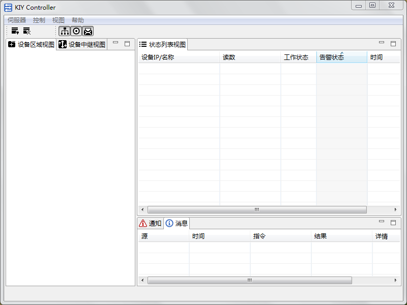
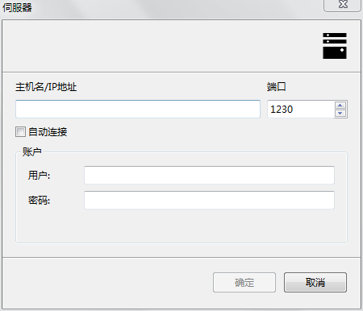

开始使用介绍将引导您快速通过控制台程序(KIY-Controller)连接到伺服器并完成一些监控和控制工作。
在此之前您需要询问系统实施人员获得连接伺服器的基本信息，包括：伺服器的IP地址、端口（默认为1230）、以及用户名和密码；登录伺服器时需要提供这些信息。
1.获取控制台程序，通过下载或者购买的程序介质将程序包拷贝到您的电脑上任意目录。
2.控制台程序可以运行在Linux、Windows和MAC操作系统，并且无需执行安装过程便可直接运行。如果是Windows系统请执行kiy-controller.cmd或kiy-controller.exe文件启动程序；如果是Linux/Unix系统请执行kiy-controller.sh文件；如果是MAC系统请执行kiy-controller.jar。
1.启动控制台程序，稍后将出现控制台程序主界面，如下图所示。
2.点击菜单[伺服器]>[新建]>[伺服器]打开新建伺服器窗口，并在其中填入连接伺服器所需的基本信息后点击[确定]，如下图所示。
3.如果创建伺服器时勾选了[自动连接]，创建成功后将立即连接到伺服器服务器；如果未勾选[自动连接]则点击菜单[伺服器]>[连接]手动连接到伺服器服务器。
4.连接成功之后控制台将自动与伺服器同步数据，数据同步完成将会在伺服器树形结构下显示所有的区域和设备，点击对应的区域将在状态视图中显示选中区域的设备状态。